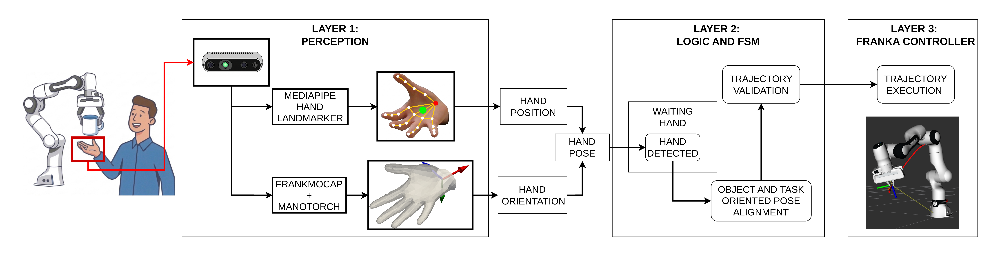
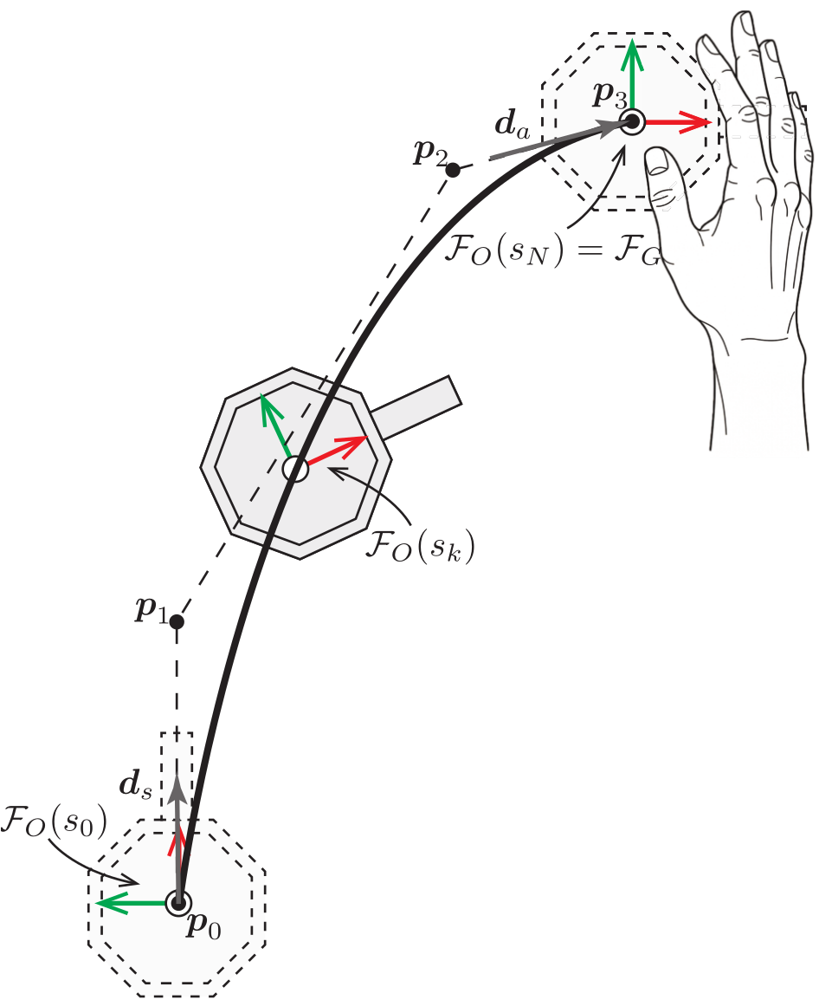
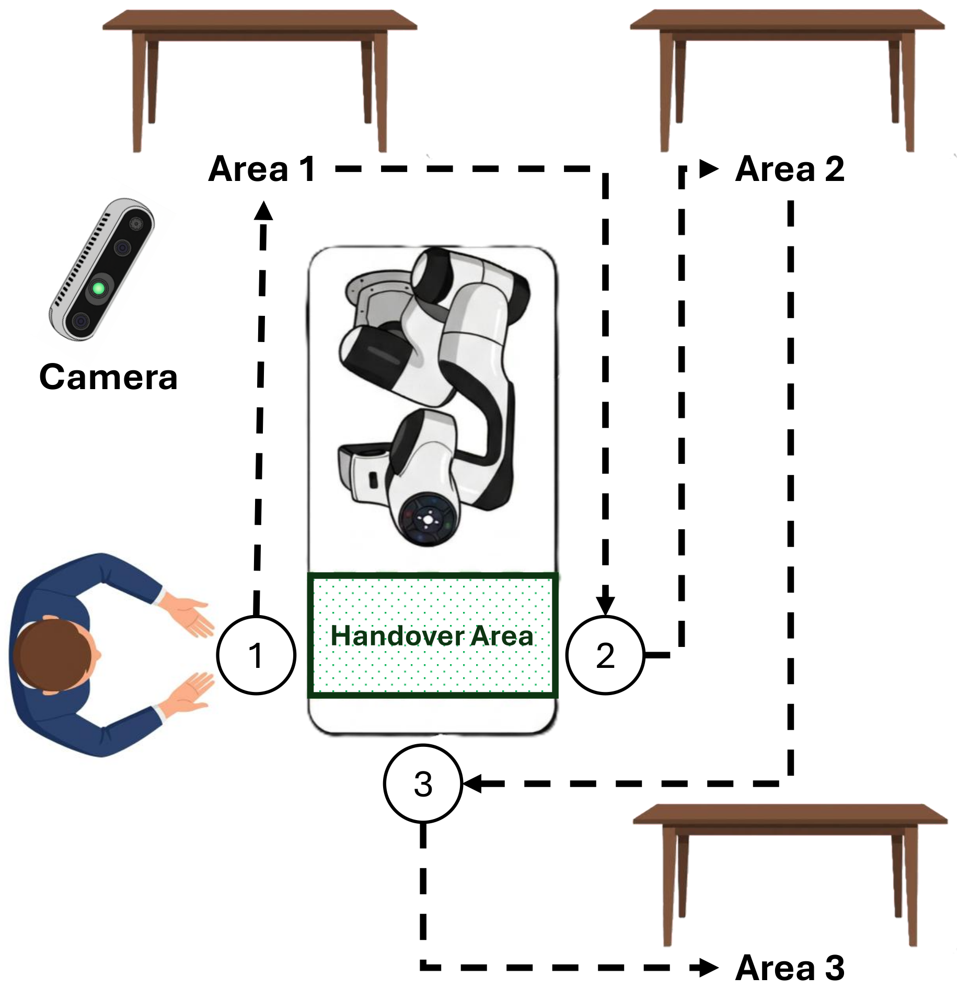
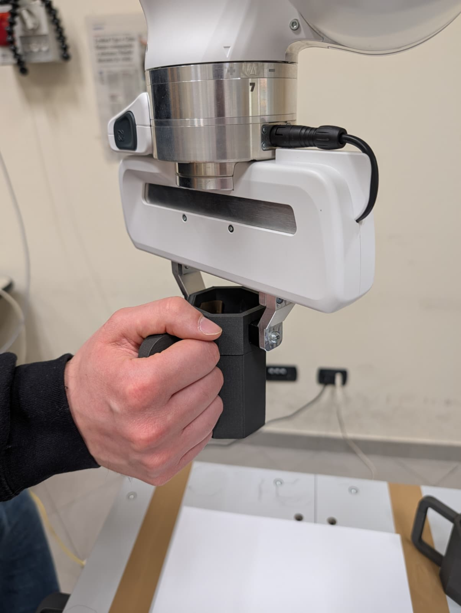
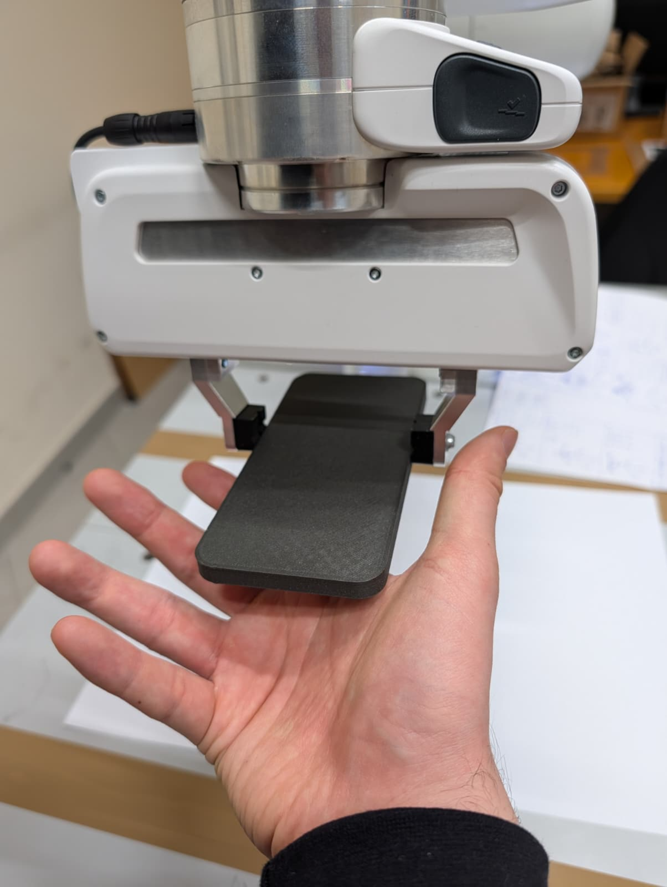

Abstract
Robot-to-human handovers often rely on static, open-loop strategies that force the human adaptation. This work presents a novel adaptive framework that dynamically adjusts the object's delivery pose in real-time based on the user's hand pose and intended downstream task. By integrating AI-based hand pose estimation with smooth, kinematically constrained trajectories, the system ensures a safe approach and optimal handover orientation. A comprehensive user study compares this adaptive approach against a static baseline across multiple tasks, evaluating subjective metrics (NASA-TLX, Human-Robot Trust Scale) and objective physiological data (blink rate via wearable eye-trackers). Results demonstrate that dynamic alignment significantly reduces users' cognitive workload and physiological stress, while increasing perceived trust in the robot's reliability. These findings highlight the potential of task- and pose-aware systems for fluid, ergonomic human-robot collaboration.
Framework Architecture
The adaptive handover framework integrates perception, orchestration, and low-level control across three layers. Layer 1 extracts 3D hand position and orientation using MediaPipe and FrankMocap + Manotorch. Layer 2 orchestrates the handover finite state machine (FSM) and computes the object-task-oriented pose alignment while validating the trajectory. Layer 3 executes the safe trajectory on the Franka Emika Panda collaborative robot.

Overview of the proposed Adaptive handover framework. Layer 1: hand pose estimation; Layer 2: FSM orchestration and trajectory validation; Layer 3: safe trajectory execution.
Trajectory Generation
To generate smooth and ergonomically predictable handover motions, the controller evaluates a cubic Bézier trajectory in Cartesian space. The curve is defined by four control points: the current end-effector position, the final target grasp position, and two intermediate points that shape the approach. The intermediate points enforce a smooth tangent departure along the initial direction and a natural approach from the direction pointing outward from the user's palm.
The motion law is governed by a fifth-order polynomial designed to limit the maximum jerk, ensuring a comfortable motion profile. Concurrently, the end-effector orientation is updated via SLERP interpolation between the initial and target quaternions, with an orientation-lock factor that ensures the object's attitude stabilizes before reaching the final spatial coordinate.

Cubic Bézier trajectory shaped by four control points, imposing start and approach directions for smooth, natural motion toward the grasp frame.
Experimental Setup
The experimental workspace features a Franka Emika Panda collaborative robot monitored by an Intel RealSense D435i camera. The layout includes three predefined handover spots where users stand to receive objects, paired with corresponding deposition areas. A volumetric zone within the robot's workspace serves as the primary handover volume where users place their right hand.
Participants experience both Static and Adaptive handover conditions in a counterbalanced within-subjects design. In the Static condition, the robot delivers objects at a fixed pose. In the Adaptive condition, the system dynamically adjusts the delivery pose based on the user's hand and the post-handover task.

Laboratory setup showing the robotic arm, vision system, and predefined handover/deposition areas.
Task-Dependent Grasp Types
The robot's adaptive handover alignment ensures ergonomic affordance for each specific post-handover task.

Mug — Drinking: Direct handle grasp for immediate use.

Mug — Passing: Grasp leaves the handle accessible for the receiver.

Mug — Dishwasher: Bottom grasp to place mug upside down.

Smartphone — Placing: Oriented for laying flat on a surface.

Smartphone — Passing: Presented for easy hand-to-hand transfer.

Smartphone — Charging: Oriented with charging port accessible.
Key Contributions
Dynamic Kinematic Control
The system simultaneously considers the optimal position and orientation relative to the user's hand in real-time. Using an AI pose estimation model, we extract the kinematics of the human wrist. Cartesian trajectories on Bézier curves are geometrically constrained by the optimal approach direction toward the user's palm, guaranteeing a natural and unobstructed presentation. The translational motion is parameterized by a fifth-order polynomial time law limiting the maximum jerk, while SLERP interpolation adapts the object's attitude on the fly.
Comparative Experimental Validation
A comprehensive user study combines subjective metrics—via validated questionnaires such as the NASA-TLX and Human-Robot Trust Scale—with objective physiological data acquired through NEON Pupil Glass wearable eye-trackers. Real-time analysis of blink rate quantifies the user's cognitive effort, offering a holistic and robust evaluation of handover quality.
Comparison with Prior Work
| Method | Real-Time Tracking | Task-Aware Alignment | Predictable Motion | Objective HRI Metrics |
|---|---|---|---|---|
| Aleotti et al., 2012 | Partial | |||
| Liu et al., 2025; Tulbure et al., 2025 | ||||
| Zhang et al., 2023 | ||||
| Käppler et al., 2023; Sorrentino et al., 2024 | ||||
| Ours |
Comparison of key features in robot-to-human handover literature. Our framework is the first to satisfy all four interaction constraints simultaneously.
Evaluation Metrics
Objective Physiological Metrics
NEON Pupil Glass wearable eye-trackers continuously record eye movements during handover execution. The blink rate serves as a non-invasive, real-time indicator of cognitive workload and trust toward the robot's motion predictability.
Subjective Metrics
- NASA-TLX: Multidimensional workload assessment across Mental Demand, Physical Demand, Temporal Demand, Performance, Effort, and Frustration.
- Human-Robot Trust Scale: 10-item questionnaire evaluating comfort with robot kinematics/speed, trust in gripper reliability, perceived physical safety, and task-related anxiety.
Acknowledgments
This work was partially supported by the Italian National Recovery and Resilience Plan (PNRR), Mission 4 "Education and Research", Component C2, Investment 1.1 "PRIN – Projects of Relevant National Interest", Project I-SHARM: Intelligent SHared Autonomy for Robotic Manipulation Systems (Project ID 2022NTZRFM, CUP E53C24002600006) and by the University of Modena and Reggio Emilia under the FAR project titled ROBIN3: a ROBotic INTelligent, INTuitive, and INTeractive platform for NAO-Mediated Autistic Healthcare.